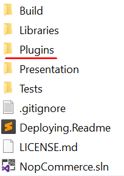
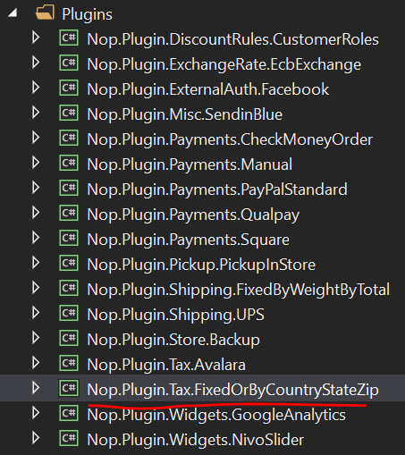
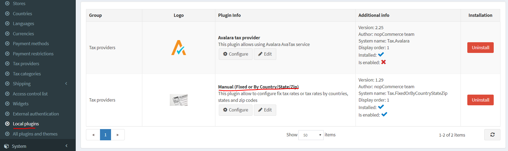
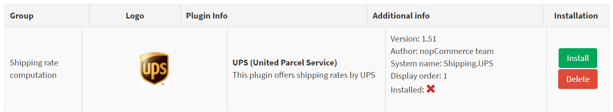
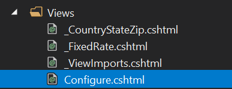
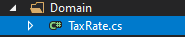
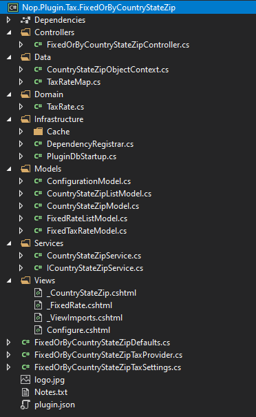

How to write a Tax Plugin for nopCommerce
To extend nopCommerce functionality, plugins are used. There are various types of plugins like "PickupInStore" and "PayPal Standard" which are already contained in the nopCommerce distro. You can also search various plugins on the nopCommerce official site to see if someone has already created a plugin that suits your needs. If you haven't found one, then you are at the right place because this article will guide you through the process of creating a plugin, especially a tax plugin, according to your need.
The plugin structure, required files, and locations
Start by creating a new "Class Library" project in the solution. It is recommended to place your plugin in the Plugins directory, located in the root folder of the source, where other plugins and widgets already reside.

Note
Do not get confused this directory with the one which exists in the
Presentation\Nop.Webdirectory. The Plugins directory in the Nop.Web directory contains the plugin's compiled files.A recommended name for a plugin project is
Nop.Plugin.{Group}.{Name}.{Group}is your plugin group (for example,PaymentorShipping).{Name}is your plugin name (for example,FixedOrByCountryStateZip). For example,FixedOrByCountryStateZiptax plugin has the following name:Nop.Plugin.Tax.FixedOrByCountryStateZip. But please note that it's not a requirement. And you can choose any name for a plugin. For example,MyFirstTaxPlugin. The Plugins directory structure of a solution looks like the following.
Once the plugin project is created, the .csproj file content should be updated using any available text editor application. Replace the content with the following one:
<Project Sdk="Microsoft.NET.Sdk"> <PropertyGroup> <TargetFramework>netcoreapp2.2</TargetFramework> <Copyright>SOME_COPYRIGHT</Copyright> <Company>YOUR_COMPANY</Company> <Authors>SOME_AUTHORS</Authors> <PackageLicenseUrl>PACKAGE_LICENSE_URL</PackageLicenseUrl> <PackageProjectUrl>PACKAGE_PROJECT_URL</PackageProjectUrl> <RepositoryUrl>REPOSITORY_URL</RepositoryUrl> <RepositoryType>Git</RepositoryType> <OutputPath>..\..\Presentation\Nop.Web\Plugins\PLUGIN_OUTPUT_DIRECTORY</OutputPath> <OutDir>$(OutputPath)</OutDir> <!--Set this parameter to true to get the dlls copied from the NuGet cache to the output of your project. You need to set this parameter to true if your plugin has a nuget package to ensure that the dlls copied from the NuGet cache to the output of your project--> <CopyLocalLockFileAssemblies>true</CopyLocalLockFileAssemblies> </PropertyGroup> <ItemGroup> <ProjectReference Include="..\..\Presentation\Nop.Web.Framework\Nop.Web.Framework.csproj" /> <ClearPluginAssemblies Include="$(MSBuildProjectDirectory)\..\..\Build\ClearPluginAssemblies.sproj" /> </ItemGroup> <!-- This target execute after "Build" target --> <Target Name="NopTarget" AfterTargets="Build"> <!-- Delete unnecessary libraries from plugins path --> <MSBuild Projects="@(ClearPluginAssemblies)" Properties="PluginPath=$(MSBuildProjectDirectory)\ $ (OutDir)" Targets="NopClear" /> </Target> </Project>Note
The PLUGIN_OUTPUT_DIRECTORY should be replace by the plugin name, for example,
Tax.FixedOrByCountryStateZip.After updating the .csproj file, the
plugin.jsonfile should be added which is required for the plugin. This file contains meta-information describing your plugin. Just copy this file from any other existing plugin/widget and modify it for your needs. For information about theplugin.jsonfile, please see plugin.json file.The last required step is to create a class that implements
BasePlugin(Nop.Core.Pluginsnamespace) andITaxProviderinterface (Nop.Services.Taxnamespace). ITaxProvider implements theGetTaxRatemethod which returns type CalculateTaxResult (contains tax rate, errors if any, andBooleansuccess status) based on the custom logic, usually based on the customer address.
Handling requests. Controllers, models, and views
Now you can see the plugin by going to Admin area → Configuration → Local Plugins.

When a plugin/widget is installed, you will see the Uninstall button. It is a good practice that you uninstall plugins/widgets which are not necessary for performance improvement.

There will be the Install and Delete buttons when a plugin/widget is not installed or uninstalled.
Note
Deleting will remove physical files from the server.
But as you guessed our plugin does nothing. It does not even have a user interface for its configuration. Let's create a page to configure the plugin.
What we need to do now is create a controller, a model, a view, and a view component.
- MVC controllers are responsible for responding to requests made against an
ASP.NET MVCwebsite. Each browser request is mapped to a particular controller. - A view contains the HTML markup and content that is sent to the browser. A view is the equivalent of a page when working with an
ASP.NET MVCapplication. - A view component that implements NopViewComponent which contains logic and codes to render a view.
- An MVC model contains all of your application logic that is not contained in a view or a controller.
So let's start:
- Create the model. Add a
Modelsfolder in the new plugin, and then add a new model class that fits your need. - Create the view. Add a
Viewsfolder in the new plugin, and then add a.cshtmlfile namedConfigure.cshtml. Set Build Action property of the view file is set to Content, and the Copy to Output Directory property is set to Copy always. Note that the configuration page should use the _ConfigurePlugin layout.
@model Nop.Plugin.Tax.FixedOrByCountryStateZip.Models.ConfigurationModel
@{
Layout = "_ConfigurePlugin";
}
<div class="form-group">
<div class="col-md-12">
<div class="onoffswitch">
<input type="checkbox" name="onoffswitch" class="onoffswitch-checkbox" id="advanced-settings-mode" checked="@Model.CountryStateZipEnabled">
<label class="onoffswitch-label" for="advanced-settings-mode">
<span class="onoffswitch-inner"
data-locale-basic="@T("Plugins.Tax.FixedOrByCountryStateZip.Fixed")"
data-locale-advanced="@T("Plugins.Tax.FixedOrByCountryStateZip.TaxByCountryStateZip")"></span>
<span class="onoffswitch-switch"></span>
</label>
</div>
</div>
</div>
<script>
function checkAdvancedSettingsMode(advanced) {
if (advanced) {
$("body").addClass("advanced-settings-mode");
$("body").removeClass("basic-settings-mode");
} else {
$("body").removeClass("advanced-settings-mode");
$("body").addClass("basic-settings-mode");
}
}
checkAdvancedSettingsMode($("#advanced-settings-mode").is(':checked'));
$(document).ready(function() {
$("#advanced-settings-mode").click(function() {
checkAdvancedSettingsMode($(this).is(':checked'));
$.ajax({
cache: false,
url: "@Url.Action("SaveMode", "FixedOrByCountryStateZip")",
type: "POST",
data: {
value: $(this).is(':checked')
},
dataType: "json",
error: function (jqXHR, textStatus, errorThrown) {
$("#saveModeAlert").click();
}
});
ensureDataTablesRendered();
});
});
</script>
<nop-alert asp-alert-id="saveModeAlert" asp-alert-message="@T("Admin.Common.Alert.Save.Error")" />
@await Html.PartialAsync("~/Plugins/Tax.FixedOrByCountryStateZip/Views/_FixedRate.cshtml")
@await Html.PartialAsync("~/Plugins/Tax.FixedOrByCountryStateZip/Views/_CountryStateZip.cshtml", Model)
- Also make sure that you have _ViewImports.cshtml file into your
Viewsdirectory. You can just copy it from any other existing plugin or widget.

- Create the controller. Add a
Controllersfolder in the new plugin, and then add a new controller class. A good practice is to name plugin controllers {Group}{Name}Controller.cs. For example,FixedOrByCountryStateZipController. Of course, it's not a requirement to name controllers this way (but just a recommendation). Then create an appropriate action method for the configuration page (in the admin area). Let's name itConfigure. Prepare a model class and pass it to the following view using a physical view path: ~/Plugins/{PluginOutputDirectory}/Views/Configure.cshtml.
public IActionResult Configure()
{
if (!_permissionService.Authorize(StandardPermissionProvider.ManageTaxSettings))
return AccessDeniedView();
var taxCategories = _taxCategoryService.GetAllTaxCategories();
if (!taxCategories.Any())
return Content("No tax categories can be loaded");
var model = new ConfigurationModel { CountryStateZipEnabled = _countryStateZipSettings.CountryStateZipEnabled };
//stores
model.AvailableStores.Add(new SelectListItem { Text = "*", Value = "0" });
var stores = _storeService.GetAllStores();
foreach (var s in stores)
model.AvailableStores.Add(new SelectListItem { Text = s.Name, Value = s.Id.ToString() });
//tax categories
foreach (var tc in taxCategories)
model.AvailableTaxCategories.Add(new SelectListItem { Text = tc.Name, Value = tc.Id.ToString() });
//countries
var countries = _countryService.GetAllCountries(showHidden: true);
foreach (var c in countries)
model.AvailableCountries.Add(new SelectListItem { Text = c.Name, Value = c.Id.ToString() });
//states
model.AvailableStates.Add(new SelectListItem { Text = "*", Value = "0" });
var defaultCountry = countries.FirstOrDefault();
if (defaultCountry != null)
{
var states = _stateProvinceService.GetStateProvincesByCountryId(defaultCountry.Id);
foreach (var s in states)
model.AvailableStates.Add(new SelectListItem { Text = s.Name, Value = s.Id.ToString() });
}
return View("~/Plugins/Tax.FixedOrByCountryStateZip/Views/Configure.cshtml", model);
}
- Use the following attributes for your action method:
[AuthorizeAdmin] //confirms access to the admin panel
[Area(AreaNames.Admin)] //specifies the area containing a controller or action
[AdminAntiForgery] //Helps prevent malicious scripts from submitting forged page requests.
For example, open FixedOrByCountryStateZip plugin and look at its implementation of FixedOrByCountryStateZipController.
Then for each plugin that has a configuration page, you should specify a configuration URL. Base class named BasePlugin has GetConfigurationPageUrl method which returns a configuration URL:
public override string GetConfigurationPageUrl()
{
return $"{_webHelper.GetStoreLocation()}Admin/{CONTROLLER_NAME}/{ACTION_NAME}";
}
Where {CONTROLLER_NAME} is the name of your controller and {ACTION_NAME} is the name of the action (usually it's Configure).
For assigning different tax rates according to the customer address, a new table is required which records all data related to tax. For this purpose, the Domain folder is added where we add a class that extends the BaseEntity class. In this case TaxRate.cs

Another folder Data is also added which consists of Map class(es) and Object Context class(es). Mapping class implements NopEntityTypeConfiguration<T> (Nop.Data.Mapping namespace). Here, the configure method is overridden.
public override void Configure(EntityTypeBuilder<TaxRate> builder)
{
builder.ToTable(nameof(TaxRate));
builder.HasKey(rate => rate.Id);
builder.Property(rate => rate.Percentage).HasColumnType("decimal(18, 4)");
}
Object Context class implements DbContext class (Microsoft.EntityFrameworkCore namespace) and IDbContext interface (Nop.Data namespace). This IDbContext interface consists of methods related to table creation, deletion, and other custom actions like executing a raw SQL query according to the model which was previously added in the Domain folder.
public class CountryStateZipObjectContext : DbContext, IDbContext
{
#region Ctor
public CountryStateZipObjectContext(DbContextOptions<CountryStateZipObjectContext> options) : base(options)
{
}
#endregion
#region Utilities
/// <summary>
/// Further configuration the model
/// </summary>
/// <param name="modelBuilder">Model muilder</param>
protected override void OnModelCreating(ModelBuilder modelBuilder)
{
modelBuilder.ApplyConfiguration(new TaxRateMap());
base.OnModelCreating(modelBuilder);
}
#endregion
#region Methods
/// <summary>
/// Creates a DbSet that can be used to query and save instances of entity
/// </summary>
/// <typeparam name="TEntity">Entity type</typeparam>
/// <returns>A set for the given entity type</returns>
public new virtual DbSet<TEntity> Set<TEntity>() where TEntity : BaseEntity
{
return base.Set<TEntity>();
}
/// <summary>
/// Generate a script to create all tables for the current model
/// </summary>
/// <returns>A SQL script</returns>
public virtual string GenerateCreateScript()
{
return Database.GenerateCreateScript();
}
/// <summary>
/// Creates a LINQ query for the query type based on a raw SQL query
/// </summary>
/// <typeparam name="TQuery">Query type</typeparam>
/// <param name="sql">The raw SQL query</param>
/// <param name="parameters">The values to be assigned to parameters</param>
/// <returns>An IQueryable representing the raw SQL query</returns>
public virtual IQueryable<TQuery> QueryFromSql<TQuery>(string sql, params object[] parameters) where TQuery : class
{
throw new NotImplementedException();
}
/// <summary>
/// Creates a LINQ query for the entity based on a raw SQL query
/// </summary>
/// <typeparam name="TEntity">Entity type</typeparam>
/// <param name="sql">The raw SQL query</param>
/// <param name="parameters">The values to be assigned to parameters</param>
/// <returns>An IQueryable representing the raw SQL query</returns>
public virtual IQueryable<TEntity> EntityFromSql<TEntity>(string sql, params object[] parameters) where TEntity : BaseEntity
{
throw new NotImplementedException();
}
/// <summary>
/// Executes the given SQL against the database
/// </summary>
/// <param name="sql">The SQL to execute</param>
/// <param name="doNotEnsureTransaction">true - the transaction creation is not ensured; false - the transaction creation is ensured.</param>
/// <param name="timeout">The timeout to use for command. Note that the command timeout is distinct from the connection timeout, which is commonly set on the database connection string</param>
/// <param name="parameters">Parameters to use with the SQL</param>
/// <returns>The number of rows affected</returns>
public virtual int ExecuteSqlCommand(RawSqlString sql, bool doNotEnsureTransaction = false, int? timeout = null, params object[] parameters)
{
using (var transaction = Database.BeginTransaction())
{
var result = Database.ExecuteSqlCommand(sql, parameters);
transaction.Commit();
return result;
}
}
/// <summary>
/// Detach an entity from the context
/// </summary>
/// <typeparam name="TEntity">Entity type</typeparam>
/// <param name="entity">Entity</param>
public virtual void Detach<TEntity>(TEntity entity) where TEntity : BaseEntity
{
throw new NotImplementedException();
}
/// <summary>
/// Install object context
/// </summary>
public void Install()
{
//create tables
this.ExecuteSqlScript(GenerateCreateScript());
}
/// <summary>
/// Uninstall object context
/// </summary>
public void Uninstall()
{
//drop the table
this.DropPluginTable(nameof(TaxRate));
}
#endregion
}
For tax rates CRUD operation, services are created. In this case, interface ICountryStateZipService and class CountryStateZipService is created. It contains method like InsertTaxRate, UpdateTaxRate, DeleteTaxRate, GetAllTaxRates and GetTaxRateById. These method names are self-explanatory and will be consumed by controllers. Other methods can be introduced/added based according to the requirements.
ICountryStateZipService.cs
public partial interface ICountryStateZipService
{
/// <summary>
/// Deletes a tax rate
/// </summary>
/// <param name="taxRate">Tax rate</param>
void DeleteTaxRate(TaxRate taxRate);
/// <summary>
/// Gets all tax rates
/// </summary>
/// <returns>Tax rates</returns>
IPagedList<TaxRate> GetAllTaxRates(int pageIndex = 0, int pageSize = int.MaxValue);
/// <summary>
/// Gets a tax rate
/// </summary>
/// <param name="taxRateId">Tax rate identifier</param>
/// <returns>Tax rate</returns>
TaxRate GetTaxRateById(int taxRateId);
/// <summary>
/// Inserts a tax rate
/// </summary>
/// <param name="taxRate">Tax rate</param>
void InsertTaxRate(TaxRate taxRate);
/// <summary>
/// Updates the tax rate
/// </summary>
/// <param name="taxRate">Tax rate</param>
void UpdateTaxRate(TaxRate taxRate);
}
CountryStateZipService.cs
public partial class CountryStateZipService : ICountryStateZipService
{
#region Fields
private readonly IEventPublisher _eventPublisher;
private readonly IRepository<TaxRate> _taxRateRepository;
private readonly ICacheManager _cacheManager;
#endregion
#region Ctor
/// <summary>
/// Ctor
/// </summary>
/// <param name="eventPublisher">Event publisher</param>
/// <param name="cacheManager">Cache manager</param>
/// <param name="taxRateRepository">Tax rate repository</param>
public CountryStateZipService(IEventPublisher eventPublisher,
ICacheManager cacheManager,
IRepository<TaxRate> taxRateRepository)
{
_eventPublisher = eventPublisher;
_cacheManager = cacheManager;
_taxRateRepository = taxRateRepository;
}
#endregion
#region Methods
/// <summary>
/// Deletes a tax rate
/// </summary>
/// <param name="taxRate">Tax rate</param>
public virtual void DeleteTaxRate(TaxRate taxRate)
{
if (taxRate == null)
throw new ArgumentNullException(nameof(taxRate));
_taxRateRepository.Delete(taxRate);
//event notification
_eventPublisher.EntityDeleted(taxRate);
}
/// <summary>
/// Gets all tax rates
/// </summary>
/// <returns>Tax rates</returns>
public virtual IPagedList<TaxRate> GetAllTaxRates(int pageIndex = 0, int pageSize = int.MaxValue)
{
var key = string.Format(ModelCacheEventConsumer.TAXRATE_ALL_KEY, pageIndex, pageSize);
return _cacheManager.Get(key, () =>
{
var query = from tr in _taxRateRepository.Table
orderby tr.StoreId, tr.CountryId, tr.StateProvinceId, tr.Zip, tr.TaxCategoryId
select tr;
var records = new PagedList<TaxRate>(query, pageIndex, pageSize);
return records;
});
}
/// <summary>
/// Gets a tax rate
/// </summary>
/// <param name="taxRateId">Tax rate identifier</param>
/// <returns>Tax rate</returns>
public virtual TaxRate GetTaxRateById(int taxRateId)
{
if (taxRateId == 0)
return null;
return _taxRateRepository.GetById(taxRateId);
}
/// <summary>
/// Inserts a tax rate
/// </summary>
/// <param name="taxRate">Tax rate</param>
public virtual void InsertTaxRate(TaxRate taxRate)
{
if (taxRate == null)
throw new ArgumentNullException(nameof(taxRate));
_taxRateRepository.Insert(taxRate);
//event notification
_eventPublisher.EntityInserted(taxRate);
}
/// <summary>
/// Updates the tax rate
/// </summary>
/// <param name="taxRate">Tax rate</param>
public virtual void UpdateTaxRate(TaxRate taxRate)
{
if (taxRate == null)
throw new ArgumentNullException(nameof(taxRate));
_taxRateRepository.Update(taxRate);
//event notification
_eventPublisher.EntityUpdated(taxRate);
}
#endregion
}
The last thing, we need is to register the services and configure plugin DB context on application startup. For this, the Infrastructure folder is added which contains classes – DependencyRegister and PluginDbStartup.
DependencyRegister class implements IDependencyRegister interface (Nop.Core.Infrastructure.DependencyManagement namespace) which has Register method.
public class DependencyRegistrar : IDependencyRegistrar
{
/// <summary>
/// Register services and interfaces
/// </summary>
/// <param name="builder">Container builder</param>
/// <param name="typeFinder">Type finder</param>
/// <param name="config">Config</param>
public virtual void Register(ContainerBuilder builder, ITypeFinder typeFinder, NopConfig config)
{
builder.RegisterType<FixedOrByCountryStateZipTaxProvider>().As<ITaxProvider>().InstancePerLifetimeScope();
builder.RegisterType<CountryStateZipService>().As<ICountryStateZipService>().InstancePerLifetimeScope();
//data context
builder.RegisterPluginDataContext<CountryStateZipObjectContext>("nop_object_context_tax_country_state_zip");
//override required repository with our custom context
builder.RegisterType<EfRepository<TaxRate>>().As<IRepository<TaxRate>>()
.WithParameter(ResolvedParameter.ForNamed<IDbContext>("nop_object_context_tax_country_state_zip"))
.InstancePerLifetimeScope();
}
/// <summary>
/// Order of this dependency registrar implementation
/// </summary>
public int Order => 1;
}
Similarly, PluginDbStartup class implements INopStartup interface (Nop.Core.Infrastructure namespace) which has ConfigureServices and Configure methods. For this example, object context is added in ConfigureServices method.
public class PluginDbStartup : INopStartup
{
/// <summary>
/// Add and configure any of the middleware
/// </summary>
/// <param name="services">Collection of service descriptors</param>
/// <param name="configuration">Configuration of the application</param>
public void ConfigureServices(IServiceCollection services, IConfiguration configuration)
{
//add object context
services.AddDbContext<CountryStateZipObjectContext>(optionsBuilder =>
{
optionsBuilder.UseSqlServerWithLazyLoading(services);
});
}
/// <summary>
/// Configure the using of added middleware
/// </summary>
/// <param name="application">Builder for configuring an application's request pipeline</param>
public void Configure(IApplicationBuilder application)
{
}
/// <summary>
/// Gets order of this startup configuration implementation
/// </summary>
public int Order => 11;
}
Project structure of Tax Plugin

Handling "Install" and "Uninstall" methods
This step is optional. Some plugins can require additional logic during their installation. For example, a plugin can insert new locale resources or add necessary tables or settings values. So open your BasePlugin implementation and override the following methods:
Install. This method will be invoked during plugin installation. You can initialize any settings here, insert new locale resources, or create some new database tables (if required).
public override void Install()
{
//database objects
_objectContext.Install();
//settings
_settingService.SaveSetting(new FixedOrByCountryStateZipTaxSettings());
//locales
_localizationService.AddOrUpdatePluginLocaleResource("Plugins.Tax.FixedOrByCountryStateZip.Fixed", "Fixed rate");
_localizationService.AddOrUpdatePluginLocaleResource("Plugins.Tax.FixedOrByCountryStateZip.TaxByCountryStateZip", "By Country");
_localizationService.AddOrUpdatePluginLocaleResource("Plugins.Tax.FixedOrByCountryStateZip.Fields.TaxCategoryName", "Tax category");
_localizationService.AddOrUpdatePluginLocaleResource("Plugins.Tax.FixedOrByCountryStateZip.Fields.Rate", "Rate");
_localizationService.AddOrUpdatePluginLocaleResource("Plugins.Tax.FixedOrByCountryStateZip.Fields.Store", "Store");
_localizationService.AddOrUpdatePluginLocaleResource("Plugins.Tax.FixedOrByCountryStateZip.Fields.Store.Hint", "If an asterisk is selected, then this shipping rate will apply to all stores.");
_localizationService.AddOrUpdatePluginLocaleResource("Plugins.Tax.FixedOrByCountryStateZip.Fields.Country", "Country");
_localizationService.AddOrUpdatePluginLocaleResource("Plugins.Tax.FixedOrByCountryStateZip.Fields.Country.Hint", "The country.");
_localizationService.AddOrUpdatePluginLocaleResource("Plugins.Tax.FixedOrByCountryStateZip.Fields.StateProvince", "State / province");
_localizationService.AddOrUpdatePluginLocaleResource("Plugins.Tax.FixedOrByCountryStateZip.Fields.StateProvince.Hint", "If an asterisk is selected, then this tax rate will apply to all customers from the given country, regardless of the state.");
_localizationService.AddOrUpdatePluginLocaleResource("Plugins.Tax.FixedOrByCountryStateZip.Fields.Zip", "Zip");
_localizationService.AddOrUpdatePluginLocaleResource("Plugins.Tax.FixedOrByCountryStateZip.Fields.Zip.Hint", "Zip / postal code. If zip is empty, then this tax rate will apply to all customers from the given country or state, regardless of the zip code.");
_localizationService.AddOrUpdatePluginLocaleResource("Plugins.Tax.FixedOrByCountryStateZip.Fields.TaxCategory", "Tax category");
_localizationService.AddOrUpdatePluginLocaleResource("Plugins.Tax.FixedOrByCountryStateZip.Fields.TaxCategory.Hint", "The tax category.");
_localizationService.AddOrUpdatePluginLocaleResource("Plugins.Tax.FixedOrByCountryStateZip.Fields.Percentage", "Percentage");
_localizationService.AddOrUpdatePluginLocaleResource("Plugins.Tax.FixedOrByCountryStateZip.Fields.Percentage.Hint", "The tax rate.");
_localizationService.AddOrUpdatePluginLocaleResource("Plugins.Tax.FixedOrByCountryStateZip.AddRecord", "Add tax rate");
_localizationService.AddOrUpdatePluginLocaleResource("Plugins.Tax.FixedOrByCountryStateZip.AddRecordTitle", "New tax rate");
base.Install();
}
Uninstall. This method will be invoked during plugin uninstallation. You can remove previously initialized settings, locale resources, or database tables by plugin during installation.
public override void Uninstall()
{
//settings
_settingService.DeleteSetting<FixedOrByCountryStateZipTaxSettings>();
//fixed rates
var fixedRates = _taxCategoryService.GetAllTaxCategories()
.Select(taxCategory => _settingService.GetSetting(string.Format(FixedOrByCountryStateZipDefaults.FixedRateSettingsKey, taxCategory.Id)))
.Where(setting => setting != null).ToList();
_settingService.DeleteSettings(fixedRates);
//database objects
_objectContext.Uninstall();
//locales
_localizationService.DeletePluginLocaleResource("Plugins.Tax.FixedOrByCountryStateZip.Fixed");
_localizationService.DeletePluginLocaleResource("Plugins.Tax.FixedOrByCountryStateZip.TaxByCountryStateZip");
_localizationService.DeletePluginLocaleResource("Plugins.Tax.FixedOrByCountryStateZip.Fields.TaxCategoryName");
_localizationService.DeletePluginLocaleResource("Plugins.Tax.FixedOrByCountryStateZip.Fields.Rate");
_localizationService.DeletePluginLocaleResource("Plugins.Tax.FixedOrByCountryStateZip.Fields.Store");
_localizationService.DeletePluginLocaleResource("Plugins.Tax.FixedOrByCountryStateZip.Fields.Store.Hint");
_localizationService.DeletePluginLocaleResource("Plugins.Tax.FixedOrByCountryStateZip.Fields.Country");
_localizationService.DeletePluginLocaleResource("Plugins.Tax.FixedOrByCountryStateZip.Fields.Country.Hint");
_localizationService.DeletePluginLocaleResource("Plugins.Tax.FixedOrByCountryStateZip.Fields.StateProvince");
_localizationService.DeletePluginLocaleResource("Plugins.Tax.FixedOrByCountryStateZip.Fields.StateProvince.Hint");
_localizationService.DeletePluginLocaleResource("Plugins.Tax.FixedOrByCountryStateZip.Fields.Zip");
_localizationService.DeletePluginLocaleResource("Plugins.Tax.FixedOrByCountryStateZip.Fields.Zip.Hint");
_localizationService.DeletePluginLocaleResource("Plugins.Tax.FixedOrByCountryStateZip.Fields.TaxCategory");
_localizationService.DeletePluginLocaleResource("Plugins.Tax.FixedOrByCountryStateZip.Fields.TaxCategory.Hint");
_localizationService.DeletePluginLocaleResource("Plugins.Tax.FixedOrByCountryStateZip.Fields.Percentage");
_localizationService.DeletePluginLocaleResource("Plugins.Tax.FixedOrByCountryStateZip.Fields.Percentage.Hint");
_localizationService.DeletePluginLocaleResource("Plugins.Tax.FixedOrByCountryStateZip.AddRecord");
_localizationService.DeletePluginLocaleResource("Plugins.Tax.FixedOrByCountryStateZip.AddRecordTitle");
base.Uninstall();
}
Important
If you override one of these methods, do not hide its base implementation -base.Install() and base.Uninstall().